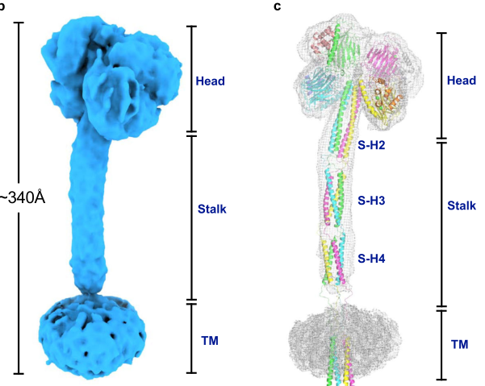

LMAN1L (ERGL; "Protein ERGIC-53-like", also "Lectin mannose-binding 1-like") is a testis- and prostate-enriched human paralog of LMAN1/ERGIC-53 and a member of the L-type lectin (legume lectin-like) family. It is a 526-aa single-pass type I membrane glycoprotein with a lumenal L-type lectin-like domain, a single transmembrane segment, and a short cytoplasmic tail, an architecture typical of ERGIC/ER-resident cargo receptors. By homology to ERGIC-53 it is predicted to be a calcium-dependent mannose-binding lectin that acts as a cargo receptor in the endoplasmic reticulum-Golgi intermediate compartment and in COPII-mediated ER-to-Golgi transport. Direct functional evidence is lacking, however; the protein is characterized only at the transcript level and essentially all of its functional roles are inferred by homology (phylogenetic and electronic annotation) rather than demonstrated for this paralog.
| GO Term | Evidence | Action | Reason |
|---|---|---|---|
|
GO:0005793
endoplasmic reticulum-Golgi intermediate compartment
|
IBA
GO_REF:0000033 |
KEEP AS NON CORE |
Summary: Phylogenetic (IBA) assignment of ERGIC localization, propagated from the ERGIC-53/LMAN1 L-type lectin family. Consistent with the UniProt subcellular location, which is itself an inference by similarity (ECO:0000250); no direct experimental localization exists for this paralog.
Reason: Plausible by homology to ERGIC-53 and consistent with the (similarity-based) UniProt ERGIC membrane location, but unverified experimentally for LMAN1L; kept as non-core given thin evidence.
Supporting Evidence:
file:human/LMAN1L/LMAN1L-uniprot.txt
Endoplasmic reticulum-Golgi intermediate
|
|
GO:0000139
Golgi membrane
|
IBA
GO_REF:0000033 |
KEEP AS NON CORE |
Summary: Phylogenetic (IBA) Golgi membrane localization propagated from the family. ERGIC-53-like cargo receptors cycle between ER, ERGIC and cis-Golgi, so this is plausible, but it is unverified for LMAN1L.
Reason: Homology-plausible for an ERGIC-53-like cycling cargo receptor but without direct evidence for this paralog; retained as non-core.
Supporting Evidence:
file:human/LMAN1L/LMAN1L-uniprot.txt
Single-pass type I membrane protein
|
|
GO:0005789
endoplasmic reticulum membrane
|
IBA
GO_REF:0000033 |
KEEP AS NON CORE |
Summary: Phylogenetic (IBA) ER membrane localization propagated from the L-type lectin family. Consistent with the predicted single-pass type I membrane topology, but unverified for this paralog.
Reason: Homology-plausible given the predicted membrane topology; no direct experimental support for LMAN1L, so kept as non-core.
Supporting Evidence:
file:human/LMAN1L/LMAN1L-uniprot.txt
Single-pass type I membrane protein
|
|
GO:0005537
D-mannose binding
|
IBA
GO_REF:0000033 |
KEEP AS NON CORE |
Summary: Phylogenetic (IBA) assignment of D-mannose binding, propagated from the L-type lectin / vesicular mannose-binding lectin family. LMAN1L carries an L-type lectin-like domain consistent with this, but no direct carbohydrate-binding assay has been performed for this protein.
Reason: The L-type lectin-like domain (and PANTHER "vesicular mannose-binding lectin" family placement) makes mannose binding the most defensible predicted molecular function, but it is purely homology/IBA-based with no experimental support; kept as non-core rather than core. It is a lectin, not a glycosidase, so no catalytic activity is assigned.
Supporting Evidence:
file:human/LMAN1L/LMAN1L-uniprot.txt
L-type lectin-like
|
|
GO:0006888
endoplasmic reticulum to Golgi vesicle-mediated transport
|
IBA
GO_REF:0000033 |
KEEP AS NON CORE |
Summary: Phylogenetic (IBA) assignment of ER-to-Golgi transport, propagated from the ERGIC-53/LMAN1 cargo-receptor family. Plausible for an ERGIC-53-like protein but unverified for LMAN1L.
Reason: Homology-plausible role for an ERGIC-53-like cargo receptor; no functional transport assay exists for this paralog, so retained as non-core.
Supporting Evidence:
file:human/LMAN1L/LMAN1L-uniprot.txt
Endoplasmic reticulum-Golgi intermediate
|
|
GO:0030134
COPII-coated ER to Golgi transport vesicle
|
IBA
GO_REF:0000033 |
KEEP AS NON CORE |
Summary: Phylogenetic (IBA) localization to COPII transport vesicles, propagated from the cargo-receptor family. ERGIC-53 family members are packaged into COPII vesicles; plausible by homology but unverified for LMAN1L.
Reason: Homology-plausible for an ERGIC-53-like cargo receptor but lacking direct evidence for this paralog; retained as non-core.
Supporting Evidence:
file:human/LMAN1L/LMAN1L-uniprot.txt
Single-pass type I membrane protein
|
|
GO:0005793
endoplasmic reticulum-Golgi intermediate compartment
|
IEA
GO_REF:0000117 |
KEEP AS NON CORE |
Summary: Electronic (ARBA) ERGIC localization, redundant with the IBA ERGIC annotation and consistent with the similarity-based UniProt subcellular location.
Reason: Correct compartment by homology to ERGIC-53 but unverified for this paralog; redundant with the IBA ERGIC annotation, kept as non-core.
Supporting Evidence:
file:human/LMAN1L/LMAN1L-uniprot.txt
Endoplasmic reticulum-Golgi intermediate
|
|
GO:0012505
endomembrane system
|
IEA
GO_REF:0000117 |
MARK AS OVER ANNOTATED |
Summary: Electronic (ARBA) assignment to the very general "endomembrane system" term. This is an uninformative parent of the more specific ERGIC/ER localizations.
Reason: Generic high-level compartment term superseded by the more specific ERGIC/ER membrane annotations; not informative on its own.
Supporting Evidence:
file:human/LMAN1L/LMAN1L-uniprot.txt
Endoplasmic reticulum-Golgi intermediate
|
|
GO:0016020
membrane
|
IEA
GO_REF:0000002 |
MARK AS OVER ANNOTATED |
Summary: InterPro-based electronic assignment of the generic "membrane" term. The protein is indeed a single-pass membrane protein, but the bare "membrane" term is uninformative relative to the specific ERGIC membrane localization.
Reason: Uninformative generic parent; the specific ERGIC membrane term captures the localization better.
Supporting Evidence:
file:human/LMAN1L/LMAN1L-uniprot.txt
Single-pass type I membrane protein
|
|
GO:0033116
endoplasmic reticulum-Golgi intermediate compartment membrane
|
IEA
GO_REF:0000044 |
KEEP AS NON CORE |
Summary: Electronic transfer of the UniProt subcellular location ("Endoplasmic reticulum-Golgi intermediate compartment membrane", ECO:0000250) to the matching GO term. This is the most specific and best-supported localization, although the UniProt assignment is itself by similarity to ERGIC-53.
Reason: Most specific localization, directly matching the UniProt (similarity-based) subcellular location; defensible by homology but unverified experimentally for this paralog, so kept as non-core.
Supporting Evidence:
file:human/LMAN1L/LMAN1L-uniprot.txt
Endoplasmic reticulum-Golgi intermediate
|
|
GO:0031012
extracellular matrix
|
HDA
PMID:28675934 Characterization of the Extracellular Matrix of Normal and D... |
KEEP AS NON CORE |
Summary: High-throughput MS detection of LMAN1L in the urea-insoluble pellet of a decellularized ECM proteomics preparation from TNBC-adjacent breast tissue. The authors explicitly note LMAN1L is a transmembrane protein, indicating it is a peripheral co-isolate of the ECM-enrichment protocol rather than a bona fide secreted ECM component.
Reason: Genuine experimental detection but peripheral; LMAN1L is a transmembrane protein incidentally co-purifying in an ECM proteomics dataset, not a core extracellular matrix function.
Supporting Evidence:
PMID:28675934
LMAN1L, which is, in fact, a transmembrane protein
|
Q: Does LMAN1L actually bind high-mannose glycans in a calcium-dependent manner like ERGIC-53, and if so what is its cargo glycoprotein repertoire?
Q: Given its prostate/testis-enriched expression, does LMAN1L serve a tissue-specific cargo-receptor role distinct from the ubiquitous LMAN1, or is it a largely redundant/vestigial paralog?
Experiment: Express tagged LMAN1L in cultured cells and determine its subcellular localization by immunofluorescence colocalization with ERGIC-53/ERGIC, ER and cis-Golgi markers to test the predicted ERGIC residence.
Experiment: Perform glycan-array or carbohydrate-affinity (e.g. mannose-Sepharose, calcium-dependent) binding assays with purified recombinant LMAN1L lumenal domain to test the predicted D-mannose lectin activity directly.
The research report should be a detailed narrative explaining the function, biological processes, and localization of the gene product. Citations should be given for all claims.
You should prioritize authoritative reviews and primary scientific literature when conducting research. You can supplement
this with annotations you find in gene/protein databases, but these can be outdated or inaccurate.
We are specifically interested in the primary function of the gene - for enzymes, what reaction is catalyzed, and what is the substrate specificity? For transporters, what is the substrate? For structural proteins or adapters, what is the broader structural role? For signaling molecules, what is the role in the pathway.
We are interested in where in or outside the cell the gene product carries out its function.
We are also interested in the signaling or biochemical pathways in which the gene functions. We are less interested in broad pleiotropic effects, except where these elucidate the precise role.
Include evidence where possible. We are interested in both experimental evidence as well as inference from structure, evolution, or bioinformatic analysis. Precise studies should be prioritized over high-throughput, where available.
Proteins entering the secretory pathway are synthesized in the ER, packaged into COPII vesicles, and delivered to the ER–Golgi intermediate compartment (ERGIC) before reaching the cis-Golgi. Cargo receptors typically cycle between ER and ERGIC/cis-Golgi: they capture cargo in the ER and are retrieved back to the ER after cargo unloading. (baines2007receptormediatedproteintransport pages 1-2, zhang2023mammaliancargoreceptors pages 3-3)
A canonical, well-defined mammalian cargo receptor complex is LMAN1–MCFD2, established as required for efficient secretion of specific soluble glycoproteins such as coagulation factors V and VIII. (baines2007receptormediatedproteintransport pages 1-2, baines2007receptormediatedproteintransport pages 4-6, zhang2023mammaliancargoreceptors pages 4-5)
A foundational review explicitly frames LMAN1 (ERGIC‑53) as part of a larger family of related animal L‑type lectins including LMAN1L, LMAN2 (VIP36), and LMAN2L (VIPL); some members (LMAN2 and LMAN2L) had been proposed to function in cargo transport. (baines2007receptormediatedproteintransport pages 4-6)
Interpretation for LMAN1L: This family context is the strongest direct evidence that LMAN1L should be interpreted within secretory pathway lectin/cargo receptor biology (and not confused with unrelated lectins). (baines2007receptormediatedproteintransport pages 4-6)
A structured evidence map is provided below.
| Claim/Topic | Evidence type | Key details | Best supporting source |
|---|---|---|---|
| Gene identity / nomenclature | Direct for LMAN1L | Human target verified as LMAN1L (approved name: lectin, mannose binding 1 like), Ensembl ENSG00000140506; UniProt target in this task is Q9HAT1 with synonyms including ERGL. OpenTargets confirms LMAN1L as a distinct human gene target. (OpenTargets Search: -LMAN1L) | OpenTargets target page / evidence context, PMIDs listed in database evidence; context for ENSG00000140506, accessed via OpenTargets (no DOI; database context) (OpenTargets Search: -LMAN1L) |
| L-type lectin family membership | Direct for LMAN1L | A foundational review explicitly lists LMAN1L as a member of the animal L-type lectin family, separate from LMAN1/ERGIC-53, LMAN2/VIP36, and LMAN2L/VIPL. (baines2007receptormediatedproteintransport pages 4-6) | Baines & Zhang 2007, Trends Biochem Sci; DOI: https://doi.org/10.1016/j.tibs.2007.06.006 (2007) (baines2007receptormediatedproteintransport pages 4-6) |
| Domain architecture / topology | Inference for LMAN1L | Based on its placement in the L-type lectin family and the UniProt/domain annotation supplied in the prompt (lectin legume-like / ConA-like domain), LMAN1L is likely a type I membrane protein with a luminal carbohydrate-recognition domain (CRD), stalk/coiled-coil region, transmembrane helix, and short cytosolic tail; this is strongly inferred from the closest paralog LMAN1. (das2012structuralbasisofa pages 25-31, ergicUnknownyearvaijayantidas pages 25-31) | Das 2012 thesis/article on LMAN1 structural basis (no clear journal DOI in retrieved context); summarized structural features of LMAN1 as analog (2012) (das2012structuralbasisofa pages 25-31, ergicUnknownyearvaijayantidas pages 25-31) |
| Trafficking signals / cycling concept | Direct for LMAN1; Inference for LMAN1L | LMAN1 contains a C-terminal FF motif for COPII-mediated ER exit and KK motif for COPI-mediated retrieval, cycling between ER, ERGIC, and cis-Golgi. LMAN1L likely uses analogous early secretory pathway cycling logic if it retains similar motifs/topology. (baines2007receptormediatedproteintransport pages 3-4, baines2007receptormediatedproteintransport pages 2-3, das2012structuralbasisof pages 31-37, das2012structuralbasisofa pages 31-37, zhang2023mammaliancargoreceptors pages 3-3) | Baines & Zhang 2007, Trends Biochem Sci; DOI: https://doi.org/10.1016/j.tibs.2007.06.006 (2007) (baines2007receptormediatedproteintransport pages 3-4, baines2007receptormediatedproteintransport pages 2-3) |
| Cargo receptor mechanism (COPII/COPI, pH/Ca2+) | Direct for LMAN1; Inference for LMAN1L | For LMAN1-family cargo receptors, cargo loading occurs in ER and unloading in ERGIC/Golgi; this is influenced by luminal pH and Ca2+ differences. LMAN1 mannose binding is Ca2+-sensitive, and the receptor recycles after cargo release. LMAN1L is therefore plausibly a Ca2+/pH-sensitive lectin cargo receptor or transporter-like lectin in the early secretory pathway. (zhang2023mammaliancargoreceptors pages 4-5, zhang2023mammaliancargoreceptors pages 3-3, zhang2023mammaliancargoreceptors pages 5-6) | Zhang et al. 2023, Biochem Soc Trans; DOI: https://doi.org/10.1042/bst20220713 (2023) (zhang2023mammaliancargoreceptors pages 4-5, zhang2023mammaliancargoreceptors pages 3-3, zhang2023mammaliancargoreceptors pages 5-6) |
| Structural architecture (cryo-EM 2024 analog) | Direct for LMAN1; Inference for LMAN1L | Full-length ERGIC-53/LMAN1 was resolved by cryo-EM as a tetramer with a four-leaf-clover head, long coiled-coil stalk, and transmembrane domain, in complex with MCFD2. This provides the best modern structural analog for inferring LMAN1L overall architecture as an L-type lectin family member, though it is not direct LMAN1L evidence. (watanabe2024structureoffulllength media 33178de8) | Watanabe et al. 2024, Nature Communications; DOI: https://doi.org/10.1038/s41467-024-46747-1 (2024) (watanabe2024structureoffulllength media 33178de8) |
| Known cargos for LMAN1 as analogs | Direct for LMAN1; Inference for LMAN1L | LMAN1–MCFD2 is a validated cargo receptor for coagulation factors V and VIII; other reported cargos/affected proteins include α1-antitrypsin (A1AT), cathepsin C, cathepsin Z, and additional proposed cargos such as Mac-2BP, GABAARs, and MMP-9. These establish the kind of glycoprotein-trafficking role LMAN1L might have, but no specific LMAN1L cargo was retrieved. (baines2007receptormediatedproteintransport pages 3-4, baines2007receptormediatedproteintransport pages 4-6, zhang2023mammaliancargoreceptors pages 4-5) | Baines & Zhang 2007, Trends Biochem Sci; DOI: https://doi.org/10.1016/j.tibs.2007.06.006 (2007); Zhang et al. 2023, Biochem Soc Trans; DOI: https://doi.org/10.1042/bst20220713 (2023) (baines2007receptormediatedproteintransport pages 3-4, baines2007receptormediatedproteintransport pages 4-6, zhang2023mammaliancargoreceptors pages 4-5) |
| Disease / trait associations for LMAN1L | Database association | OpenTargets links LMAN1L to several complex traits including hypertension, alcohol drinking, osteoarthritis, hip osteoarthritis, and pregnancy-induced hypertension; these appear to reflect aggregated association evidence rather than mechanism-resolving functional studies, so biological interpretation should be cautious. (OpenTargets Search: -LMAN1L) | OpenTargets disease-target association context for LMAN1L (database evidence; no DOI in retrieved context) (OpenTargets Search: -LMAN1L) |
| Localization | Inference for LMAN1L | No direct localization study for human LMAN1L was retrieved. Because LMAN1 and related L-type lectins operate in the early secretory pathway, the strongest current inference is that LMAN1L localizes to ER/ERGIC/cis-Golgi-associated compartments rather than being a classic cell-surface lectin. (baines2007receptormediatedproteintransport pages 4-6, ergicUnknownyearvaijayantidas pages 31-37, das2012structuralbasisof pages 31-37, zhang2023mammaliancargoreceptors pages 3-3) | Baines & Zhang 2007, Trends Biochem Sci; DOI: https://doi.org/10.1016/j.tibs.2007.06.006 (2007) plus LMAN1 structural/functional analog evidence (baines2007receptormediatedproteintransport pages 4-6, ergicUnknownyearvaijayantidas pages 31-37, das2012structuralbasisof pages 31-37, zhang2023mammaliancargoreceptors pages 3-3) |
| Limitations / knowledge gaps | Direct for LMAN1L | The retrieved corpus contains very limited direct experimental literature for human LMAN1L/Q9HAT1. No retrieved primary study directly established its cargo spectrum, precise subcellular localization, binding partners, or pathway-specific mechanism. Therefore, most functional annotation currently rests on family membership plus paralog-based inference, which must be labeled accordingly. (OpenTargets Search: -LMAN1L, baines2007receptormediatedproteintransport pages 4-6, zhang2023mammaliancargoreceptors pages 4-5) | Constraint from retrieved evidence set; explicit family-only mention in Baines & Zhang 2007 and absence of direct mechanistic LMAN1L studies in retrieved corpus (OpenTargets Search: -LMAN1L, baines2007receptormediatedproteintransport pages 4-6, zhang2023mammaliancargoreceptors pages 4-5) |
Table: This table separates what is directly supported for human LMAN1L from what is inferred using the best-studied paralog LMAN1/ERGIC-53 and modern cargo receptor biology. It is useful for building a cautious functional annotation while making evidence strength explicit.
Direct mechanistic statements about LMAN1L were not found in the retrieved full-text set beyond its explicit listing as an L‑type lectin family member. (baines2007receptormediatedproteintransport pages 4-6)
LMAN1 is described as a lectin cargo receptor with features typical of receptors that cycle in the early secretory pathway (transmembrane protein, luminal carbohydrate-recognition domain, and cytosolic motifs that mediate COPII export and COPI retrieval). (baines2007receptormediatedproteintransport pages 3-4, baines2007receptormediatedproteintransport pages 2-3, das2012structuralbasisof pages 31-37, das2012structuralbasisofa pages 31-37)
LMAN1-family cargo receptor behavior is also framed by compartmental chemistry: the ER lumen is relatively neutral with higher Ca2+ compared with the more acidic, lower Ca2+ ERGIC/Golgi, and these gradients can influence cargo loading/unloading. (zhang2023mammaliancargoreceptors pages 3-3)
Inference for LMAN1L: Given that LMAN1L is an animal L‑type lectin family member and (per user-provided UniProt context) contains legume/ConA-like lectin domains, the most plausible primary function is selective binding of specific glycoproteins (likely via high‑mannose-type N‑glycans and/or conformational protein determinants) to promote their ER exit and/or proper trafficking to ERGIC/cis-Golgi. This inference should be treated as a working hypothesis until direct LMAN1L experimental characterization is available. (baines2007receptormediatedproteintransport pages 4-6, das2012structuralbasisofa pages 25-31, zhang2023mammaliancargoreceptors pages 3-3)
LMAN1 is described as largely localized to the ERGIC at steady state but cycling back to the ER via COPI-dependent retrieval signals, consistent with ER↔ERGIC trafficking. (baines2007receptormediatedproteintransport pages 3-4)
Inference for LMAN1L: LMAN1L is therefore most likely an ER/ERGIC/cis-Golgi-associated cycling membrane lectin rather than a stable plasma membrane receptor. (baines2007receptormediatedproteintransport pages 4-6, zhang2023mammaliancargoreceptors pages 3-3)
| Year | Source | Contribution | Relevance to LMAN1L functional inference |
|---|---|---|---|
| 2007 | Baines & Zhang, Trends in Biochemical Sciences (Aug 2007), DOI: https://doi.org/10.1016/j.tibs.2007.06.006 | Foundational review of receptor-mediated protein transport in the early secretory pathway; explicitly identifies LMAN1L as a distinct member of the animal L-type lectin family alongside LMAN1/ERGIC-53, LMAN2/VIP36, and LMAN2L/VIPL. (baines2007receptormediatedproteintransport pages 4-6) | Provides the key evidence that the target is the correct human family member and should be interpreted within L-type lectin biology rather than confused with LMAN1 or LMAN2 paralogs. (baines2007receptormediatedproteintransport pages 4-6) |
| 2023 | Zhang, Srivastava & Zhang, Biochemical Society Transactions (Jun 2023), DOI: https://doi.org/10.1042/bst20220713 | Authoritative recent review of mammalian ER-to-Golgi cargo receptors; synthesizes evidence that LMAN1 cycles between ER and ERGIC/Golgi, uses glycan and protein interactions for cargo recognition, and is regulated by compartmental pH/Ca2+ conditions. (zhang2023mammaliancargoreceptors pages 4-5, zhang2023mammaliancargoreceptors pages 3-3, zhang2023mammaliancargoreceptors pages 5-6) | Supplies the strongest recent mechanistic framework for inferring likely LMAN1L roles as an early secretory pathway lectin/cargo receptor, while making clear that these are paralog-based inferences rather than direct LMAN1L experiments. (zhang2023mammaliancargoreceptors pages 4-5, zhang2023mammaliancargoreceptors pages 5-6, zhang2023mammaliancargoreceptors pages 3-3) |
| 2024 | Watanabe et al., Nature Communications (Mar 2024), DOI: https://doi.org/10.1038/s41467-024-46747-1 | Cryo-EM structure of full-length ERGIC-53/LMAN1 in complex with MCFD2; defines overall architecture as a long stalked tetramer with a clover-like head and transmembrane domain. (watanabe2024structureoffulllength media 33178de8) | Gives the best current structural analog for LMAN1L domain organization and supports high-confidence inference that LMAN1L, as an L-type lectin family member, likely shares a comparable secretory-pathway lectin architecture. (watanabe2024structureoffulllength media 33178de8) |
Table: This table summarizes the key sources used to anchor LMAN1L annotation, highlighting direct family-membership evidence and the most relevant recent mechanistic and structural analogs. It is useful for separating what is known directly about LMAN1L from what is inferred from the best-studied paralog, LMAN1/ERGIC-53.
A 2023 review synthesizes current understanding of mammalian ER-to-Golgi cargo receptors (with emphasis on LMAN1–MCFD2 and SURF4). For LMAN1, it summarizes separable binding for high-mannose glycans and MCFD2, notes physiologically relevant cargoes (FV, FVIII, and α1-antitrypsin) and ER retention when LMAN1/MCFD2 are absent, and highlights how luminal pH/Ca2+ conditions influence cargo loading/unloading. (zhang2023mammaliancargoreceptors pages 4-5, zhang2023mammaliancargoreceptors pages 3-3)
Relevance to LMAN1L: This is the most authoritative recent framework for hypothesizing LMAN1L’s possible cargo receptor role and regulatory logic (Ca2+/pH sensitivity), but it does not provide direct LMAN1L data. (zhang2023mammaliancargoreceptors pages 4-5)
A 2024 Nature Communications paper reports cryo‑EM structures of full-length ERGIC‑53/LMAN1 in complex with MCFD2, showing a tetrameric organization with a clover-like head and long coiled-coil stalk and proposing mechanisms of cargo capture/release. (watanabe2024structureoffulllength media 33178de8)
The most informative figure panel retrieved is cited here as a structural reference:
(watanabe2024structureoffulllength media 33178de8)
Relevance to LMAN1L: LMAN1L likely shares a related overall fold/domain organization as an L‑type lectin family member (inference), making this structure a useful analog for conceptualizing how LMAN1L could present a luminal lectin head connected to the membrane by an extended coiled-coil. (baines2007receptormediatedproteintransport pages 4-6, watanabe2024structureoffulllength media 33178de8)
LMAN1–MCFD2 is the best-defined mammalian cargo receptor complex; the review describes that it is required for efficient secretion of FV and FVIII and that in the associated inherited disorder plasma FV and FVIII can be reduced to 5–30% of normal. (baines2007receptormediatedproteintransport pages 3-4)
The same review reports that under chemical cross-linking conditions, an estimated 5–20% of FVIII is detected in a tertiary complex with LMAN1 and MCFD2, offering direct evidence of receptor–cargo interaction for the LMAN1 pathway. (baines2007receptormediatedproteintransport pages 4-6)
If LMAN1L acts as a cargo receptor, two nonexclusive mechanisms are plausible by analogy to LMAN1:
1) Lectin-mediated glycan recognition (e.g., high-mannose N-glycans) coupled to COPII packaging and COPI retrieval cycling. (baines2007receptormediatedproteintransport pages 3-4, baines2007receptormediatedproteintransport pages 2-3, das2012structuralbasisofa pages 25-31)
2) Protein–protein interactions that cooperate with glycan recognition and are modulated by luminal Ca2+/pH changes between ER and ERGIC/Golgi to promote release. (zhang2023mammaliancargoreceptors pages 3-3)
However, no specific LMAN1L cargoes or binding partners were identified in the retrieved evidence, so cargo assignment for LMAN1L remains an open question in this tool-limited corpus. (baines2007receptormediatedproteintransport pages 4-6)
Direct translational/industrial applications for LMAN1L were not supported in the retrieved corpus. By analogy, cargo receptors like SURF4 have been suggested as engineering targets to increase recombinant protein secretion; similarly, partial inhibition or modulation of LMAN1 has been discussed as potentially sufficient to modulate FV/FVIII levels in vivo (paralog evidence). (zhang2023mammaliancargoreceptors pages 4-5)
Inference for LMAN1L: If LMAN1L proves to be a selective cargo receptor for a therapeutically relevant secreted glycoprotein, it could become a target for (i) secretion engineering in biomanufacturing or (ii) modulation of specific circulating proteins. This is speculative and requires direct evidence. (zhang2023mammaliancargoreceptors pages 4-5)
Authoritative reviews emphasize that, despite the enormous diversity of secretory cargo, only a small set of mammalian cargo receptors are well-defined, and receptor-mediated transport requires (i) a cycling transmembrane component, (ii) selective impairment of cargo transport upon deficiency, and (iii) evidence of specific receptor–cargo interaction. (baines2007receptormediatedproteintransport pages 3-4)
Interpretation for LMAN1L: Because LMAN1L currently lacks the latter two criteria in the retrieved literature set, the most defensible “expert” position is that LMAN1L is a plausible candidate cargo receptor by homology, but its specific physiological cargo and mechanism remain insufficiently established in the accessible corpus. (baines2007receptormediatedproteintransport pages 3-4, baines2007receptormediatedproteintransport pages 4-6)
OpenTargets aggregates evidence connecting LMAN1L to multiple complex traits/diseases, including hypertension, alcohol drinking, and osteoarthritis (including hip OA) and pregnancy-induced hypertension. These are association scores/evidence counts and should be treated as hypothesis-generating rather than causal mechanism. (OpenTargets Search: -LMAN1L)
These values provide benchmarks for the magnitude of effect a true cargo receptor can have on secretion and for detectability of receptor–cargo complexes, but they do not specifically implicate LMAN1L. (baines2007receptormediatedproteintransport pages 3-4, baines2007receptormediatedproteintransport pages 4-6)
1) Primary functional hypothesis (inference): LMAN1L is an early secretory pathway lectin/cargo receptor-like protein that binds a subset of glycoprotein clients and supports ER-to-ERGIC/Golgi trafficking in a manner regulated by compartmental Ca2+/pH, analogous to LMAN1/ERGIC‑53. (baines2007receptormediatedproteintransport pages 4-6, zhang2023mammaliancargoreceptors pages 4-5, zhang2023mammaliancargoreceptors pages 3-3)
2) Localization hypothesis (inference): LMAN1L most likely resides in ER/ERGIC/cis-Golgi compartments and cycles via COPII/COPI logic rather than being primarily cell-surface. (baines2007receptormediatedproteintransport pages 3-4, zhang2023mammaliancargoreceptors pages 3-3)
3) Human genetics hypothesis (database association): LMAN1L may influence complex traits (e.g., hypertension, osteoarthritis) through effects on secretion/processing of specific extracellular proteins; this remains unproven and requires gene-to-phenotype mechanistic work. (OpenTargets Search: -LMAN1L)
This report is constrained by the retrieved corpus: direct experimental studies on human LMAN1L/Q9HAT1 were not accessible via the tool searches, so functional annotation necessarily relies on (i) explicit family membership evidence and (ii) structured inference from LMAN1/ERGIC‑53 and general cargo receptor biology. (baines2007receptormediatedproteintransport pages 4-6, zhang2023mammaliancargoreceptors pages 4-5)
References
(OpenTargets Search: -LMAN1L): Open Targets Query (-LMAN1L, 5 results). Buniello, A. et al. (2025). Open Targets Platform: facilitating therapeutic hypotheses building in drug discovery. Nucleic Acids Research.
(baines2007receptormediatedproteintransport pages 4-6): Andrea C. Baines and Bin Zhang. Receptor-mediated protein transport in the early secretory pathway. Trends in biochemical sciences, 32 8:381-8, Aug 2007. URL: https://doi.org/10.1016/j.tibs.2007.06.006, doi:10.1016/j.tibs.2007.06.006. This article has 62 citations and is from a domain leading peer-reviewed journal.
(zhang2023mammaliancargoreceptors pages 4-5): Yuanbao Zhang, Vishal Srivastava, and Bin Zhang. Mammalian cargo receptors for endoplasmic reticulum-to-golgi transport: mechanisms and interactions. Biochemical Society Transactions, 51:971-981, Jun 2023. URL: https://doi.org/10.1042/bst20220713, doi:10.1042/bst20220713. This article has 23 citations and is from a peer-reviewed journal.
(zhang2023mammaliancargoreceptors pages 3-3): Yuanbao Zhang, Vishal Srivastava, and Bin Zhang. Mammalian cargo receptors for endoplasmic reticulum-to-golgi transport: mechanisms and interactions. Biochemical Society Transactions, 51:971-981, Jun 2023. URL: https://doi.org/10.1042/bst20220713, doi:10.1042/bst20220713. This article has 23 citations and is from a peer-reviewed journal.
(ergicUnknownyearvaijayantidas pages 31-37): RIN ERGIC. Vaijayanti das. Unknown journal, Unknown year.
(das2012structuralbasisofa pages 25-31): V Das. Structural basis of lman1 cargo capture in er & release in ergic. Unknown journal, 2012.
(watanabe2024structureoffulllength media 33178de8): Satoshi Watanabe, Yoshiaki Kise, Kento Yonezawa, Mariko Inoue, Nobutaka Shimizu, Osamu Nureki, and Kenji Inaba. Structure of full-length ergic-53 in complex with mcfd2 for cargo transport. Nature Communications, Mar 2024. URL: https://doi.org/10.1038/s41467-024-46747-1, doi:10.1038/s41467-024-46747-1. This article has 14 citations and is from a highest quality peer-reviewed journal.
(baines2007receptormediatedproteintransport pages 1-2): Andrea C. Baines and Bin Zhang. Receptor-mediated protein transport in the early secretory pathway. Trends in biochemical sciences, 32 8:381-8, Aug 2007. URL: https://doi.org/10.1016/j.tibs.2007.06.006, doi:10.1016/j.tibs.2007.06.006. This article has 62 citations and is from a domain leading peer-reviewed journal.
(ergicUnknownyearvaijayantidas pages 25-31): RIN ERGIC. Vaijayanti das. Unknown journal, Unknown year.
(baines2007receptormediatedproteintransport pages 3-4): Andrea C. Baines and Bin Zhang. Receptor-mediated protein transport in the early secretory pathway. Trends in biochemical sciences, 32 8:381-8, Aug 2007. URL: https://doi.org/10.1016/j.tibs.2007.06.006, doi:10.1016/j.tibs.2007.06.006. This article has 62 citations and is from a domain leading peer-reviewed journal.
(baines2007receptormediatedproteintransport pages 2-3): Andrea C. Baines and Bin Zhang. Receptor-mediated protein transport in the early secretory pathway. Trends in biochemical sciences, 32 8:381-8, Aug 2007. URL: https://doi.org/10.1016/j.tibs.2007.06.006, doi:10.1016/j.tibs.2007.06.006. This article has 62 citations and is from a domain leading peer-reviewed journal.
(das2012structuralbasisof pages 31-37): V Das. Structural basis of lman1 cargo capture in er & release in ergic. Unknown journal, 2012.
(das2012structuralbasisofa pages 31-37): V Das. Structural basis of lman1 cargo capture in er & release in ergic. Unknown journal, 2012.
(zhang2023mammaliancargoreceptors pages 5-6): Yuanbao Zhang, Vishal Srivastava, and Bin Zhang. Mammalian cargo receptors for endoplasmic reticulum-to-golgi transport: mechanisms and interactions. Biochemical Society Transactions, 51:971-981, Jun 2023. URL: https://doi.org/10.1042/bst20220713, doi:10.1042/bst20220713. This article has 23 citations and is from a peer-reviewed journal.

LMAN1L (gene synonym ERGL; "Protein ERGIC-53-like" / "Lectin mannose-binding 1-like"; ORFNames UNQ2784/PRO7174) is a human paralog of LMAN1/ERGIC-53. It is a 526-aa single-pass type I membrane glycoprotein of the L-type lectin family. It was originally cloned by Yerushalmi et al. as a novel gene related to ERGIC-53 that is highly expressed in normal and neoplastic prostate [PMID:11255007, via file:human/LMAN1L/LMAN1L-uniprot.txt "ERGL, a novel gene related to ERGIC-53 that is highly expressed in normal and neoplastic prostate and several other tissues."].
Key caveat for the review: There is essentially NO experimental functional characterization of LMAN1L's lectin activity or transport role in human (or any organism). UniProt evidence level is PE 2 ("Evidence at transcript level"). Almost all GO annotations are IBA (phylogenetic/PANTHER-propagated from the L-type lectin / ERGIC-53 family) or IEA (electronic: InterPro, UniProtKB-SubCell, ARBA). The single experimental annotation is an HDA mass-spectrometry detection in an extracellular-matrix proteomics dataset.
These domain features are the defensible basis for inferring a mannose-binding L-type lectin function by homology — but no direct sugar-binding assay exists for LMAN1L.
No catalytic (mannosidase) activity should be assigned — LMAN1L is a lectin (carbohydrate-binding), not a glycosidase.
The only defensible synthesized statement is a homology-based prediction: LMAN1L is predicted to be a mannose-binding L-type lectin / ERGIC-resident type I membrane cargo receptor of the ERGIC-53/LMAN1 family, likely acting in ER-to-Golgi (COPII) cargo transport, but this is entirely inferred from family membership and domain architecture; direct functional evidence is lacking.
The Falcon (Edison Scientific) deep-research report for LMAN1L returned no gene-specific experimental literature; it explicitly states "direct experimental studies on human LMAN1L/Q9HAT1 were not accessible" and that "no primary study directly characterizes LMAN1L's cargo, binding partners, or subcellular localization." All mechanistic content is paralog-inferred from LMAN1/ERGIC-53. No new LMAN1L-specific references were added to the review.
ER proteostasis|Glycoproteostasis|N-glycosylation system|Lectin chaperone ; PN-node mapping: type "Lectin chaperone" no_mapping; group "N-glycosylation system" mapped→GO:0006487 (protein N-linked glycosylation, ok_for_propagation, new_to_goa); class/branch no_mapping.This file is generated from the current PROTEOSTASIS phase-1 dossier and local gene-review artifacts. Edit the source review, PN mapping, or dossier rather than this generated note when correcting the underlying curation.
id: Q9HAT1
gene_symbol: LMAN1L
product_type: PROTEIN
status: COMPLETE
taxon:
id: NCBITaxon:9606
label: Homo sapiens
description: LMAN1L (ERGL; "Protein ERGIC-53-like", also "Lectin mannose-binding 1-like")
is a testis- and prostate-enriched human paralog of LMAN1/ERGIC-53 and a member of
the L-type lectin (legume lectin-like) family. It is a 526-aa single-pass type I membrane
glycoprotein with a lumenal L-type lectin-like domain, a single transmembrane segment,
and a short cytoplasmic tail, an architecture typical of ERGIC/ER-resident cargo
receptors. By homology to ERGIC-53 it is predicted to be a calcium-dependent
mannose-binding lectin that acts as a cargo receptor in the endoplasmic
reticulum-Golgi intermediate compartment and in COPII-mediated ER-to-Golgi transport.
Direct functional evidence is lacking, however; the protein is characterized only at
the transcript level and essentially all of its functional roles are inferred by
homology (phylogenetic and electronic annotation) rather than demonstrated for this
paralog.
alternative_products:
- name: '1'
id: Q9HAT1-1
- name: '2'
id: Q9HAT1-2
sequence_note: Not described
- name: '3'
id: Q9HAT1-3
sequence_note: VSP_013143
existing_annotations:
- term:
id: GO:0005793
label: endoplasmic reticulum-Golgi intermediate compartment
evidence_type: IBA
original_reference_id: GO_REF:0000033
qualifier: is_active_in
review:
summary: Phylogenetic (IBA) assignment of ERGIC localization, propagated from the
ERGIC-53/LMAN1 L-type lectin family. Consistent with the UniProt subcellular
location, which is itself an inference by similarity (ECO:0000250); no direct
experimental localization exists for this paralog.
action: KEEP_AS_NON_CORE
reason: Plausible by homology to ERGIC-53 and consistent with the (similarity-based)
UniProt ERGIC membrane location, but unverified experimentally for LMAN1L; kept
as non-core given thin evidence.
supported_by:
- reference_id: file:human/LMAN1L/LMAN1L-uniprot.txt
supporting_text: Endoplasmic reticulum-Golgi intermediate
- term:
id: GO:0000139
label: Golgi membrane
evidence_type: IBA
original_reference_id: GO_REF:0000033
qualifier: is_active_in
review:
summary: Phylogenetic (IBA) Golgi membrane localization propagated from the family.
ERGIC-53-like cargo receptors cycle between ER, ERGIC and cis-Golgi, so this is
plausible, but it is unverified for LMAN1L.
action: KEEP_AS_NON_CORE
reason: Homology-plausible for an ERGIC-53-like cycling cargo receptor but without
direct evidence for this paralog; retained as non-core.
supported_by:
- reference_id: file:human/LMAN1L/LMAN1L-uniprot.txt
supporting_text: Single-pass type I membrane protein
- term:
id: GO:0005789
label: endoplasmic reticulum membrane
evidence_type: IBA
original_reference_id: GO_REF:0000033
qualifier: is_active_in
review:
summary: Phylogenetic (IBA) ER membrane localization propagated from the L-type
lectin family. Consistent with the predicted single-pass type I membrane topology,
but unverified for this paralog.
action: KEEP_AS_NON_CORE
reason: Homology-plausible given the predicted membrane topology; no direct
experimental support for LMAN1L, so kept as non-core.
supported_by:
- reference_id: file:human/LMAN1L/LMAN1L-uniprot.txt
supporting_text: Single-pass type I membrane protein
- term:
id: GO:0005537
label: D-mannose binding
evidence_type: IBA
original_reference_id: GO_REF:0000033
qualifier: enables
review:
summary: Phylogenetic (IBA) assignment of D-mannose binding, propagated from the
L-type lectin / vesicular mannose-binding lectin family. LMAN1L carries an L-type
lectin-like domain consistent with this, but no direct carbohydrate-binding assay
has been performed for this protein.
action: KEEP_AS_NON_CORE
reason: The L-type lectin-like domain (and PANTHER "vesicular mannose-binding lectin"
family placement) makes mannose binding the most defensible predicted molecular
function, but it is purely homology/IBA-based with no experimental support; kept
as non-core rather than core. It is a lectin, not a glycosidase, so no catalytic
activity is assigned.
supported_by:
- reference_id: file:human/LMAN1L/LMAN1L-uniprot.txt
supporting_text: L-type lectin-like
- term:
id: GO:0006888
label: endoplasmic reticulum to Golgi vesicle-mediated transport
evidence_type: IBA
original_reference_id: GO_REF:0000033
qualifier: involved_in
review:
summary: Phylogenetic (IBA) assignment of ER-to-Golgi transport, propagated from
the ERGIC-53/LMAN1 cargo-receptor family. Plausible for an ERGIC-53-like protein
but unverified for LMAN1L.
action: KEEP_AS_NON_CORE
reason: Homology-plausible role for an ERGIC-53-like cargo receptor; no functional
transport assay exists for this paralog, so retained as non-core.
supported_by:
- reference_id: file:human/LMAN1L/LMAN1L-uniprot.txt
supporting_text: Endoplasmic reticulum-Golgi intermediate
- term:
id: GO:0030134
label: COPII-coated ER to Golgi transport vesicle
evidence_type: IBA
original_reference_id: GO_REF:0000033
qualifier: is_active_in
review:
summary: Phylogenetic (IBA) localization to COPII transport vesicles, propagated
from the cargo-receptor family. ERGIC-53 family members are packaged into COPII
vesicles; plausible by homology but unverified for LMAN1L.
action: KEEP_AS_NON_CORE
reason: Homology-plausible for an ERGIC-53-like cargo receptor but lacking direct
evidence for this paralog; retained as non-core.
supported_by:
- reference_id: file:human/LMAN1L/LMAN1L-uniprot.txt
supporting_text: Single-pass type I membrane protein
- term:
id: GO:0005793
label: endoplasmic reticulum-Golgi intermediate compartment
evidence_type: IEA
original_reference_id: GO_REF:0000117
qualifier: located_in
review:
summary: Electronic (ARBA) ERGIC localization, redundant with the IBA ERGIC
annotation and consistent with the similarity-based UniProt subcellular location.
action: KEEP_AS_NON_CORE
reason: Correct compartment by homology to ERGIC-53 but unverified for this paralog;
redundant with the IBA ERGIC annotation, kept as non-core.
supported_by:
- reference_id: file:human/LMAN1L/LMAN1L-uniprot.txt
supporting_text: Endoplasmic reticulum-Golgi intermediate
- term:
id: GO:0012505
label: endomembrane system
evidence_type: IEA
original_reference_id: GO_REF:0000117
qualifier: located_in
review:
summary: Electronic (ARBA) assignment to the very general "endomembrane system"
term. This is an uninformative parent of the more specific ERGIC/ER localizations.
action: MARK_AS_OVER_ANNOTATED
reason: Generic high-level compartment term superseded by the more specific
ERGIC/ER membrane annotations; not informative on its own.
supported_by:
- reference_id: file:human/LMAN1L/LMAN1L-uniprot.txt
supporting_text: Endoplasmic reticulum-Golgi intermediate
- term:
id: GO:0016020
label: membrane
evidence_type: IEA
original_reference_id: GO_REF:0000002
qualifier: located_in
review:
summary: InterPro-based electronic assignment of the generic "membrane" term. The
protein is indeed a single-pass membrane protein, but the bare "membrane" term is
uninformative relative to the specific ERGIC membrane localization.
action: MARK_AS_OVER_ANNOTATED
reason: Uninformative generic parent; the specific ERGIC membrane term captures the
localization better.
supported_by:
- reference_id: file:human/LMAN1L/LMAN1L-uniprot.txt
supporting_text: Single-pass type I membrane protein
- term:
id: GO:0033116
label: endoplasmic reticulum-Golgi intermediate compartment membrane
evidence_type: IEA
original_reference_id: GO_REF:0000044
qualifier: located_in
review:
summary: Electronic transfer of the UniProt subcellular location ("Endoplasmic
reticulum-Golgi intermediate compartment membrane", ECO:0000250) to the matching
GO term. This is the most specific and best-supported localization, although the
UniProt assignment is itself by similarity to ERGIC-53.
action: KEEP_AS_NON_CORE
reason: Most specific localization, directly matching the UniProt (similarity-based)
subcellular location; defensible by homology but unverified experimentally for
this paralog, so kept as non-core.
supported_by:
- reference_id: file:human/LMAN1L/LMAN1L-uniprot.txt
supporting_text: Endoplasmic reticulum-Golgi intermediate
- term:
id: GO:0031012
label: extracellular matrix
evidence_type: HDA
original_reference_id: PMID:28675934
qualifier: located_in
review:
summary: High-throughput MS detection of LMAN1L in the urea-insoluble pellet of a
decellularized ECM proteomics preparation from TNBC-adjacent breast tissue. The
authors explicitly note LMAN1L is a transmembrane protein, indicating it is a
peripheral co-isolate of the ECM-enrichment protocol rather than a bona fide
secreted ECM component.
action: KEEP_AS_NON_CORE
reason: Genuine experimental detection but peripheral; LMAN1L is a transmembrane
protein incidentally co-purifying in an ECM proteomics dataset, not a core
extracellular matrix function.
supported_by:
- reference_id: PMID:28675934
supporting_text: LMAN1L, which is, in fact, a transmembrane protein
references:
- id: GO_REF:0000002
title: Gene Ontology annotation through association of InterPro records with GO
terms
findings: []
- id: GO_REF:0000033
title: Annotation inferences using phylogenetic trees
findings: []
- id: GO_REF:0000044
title: Gene Ontology annotation based on UniProtKB/Swiss-Prot Subcellular Location
vocabulary mapping, accompanied by conservative changes to GO terms applied by
UniProt
findings: []
- id: GO_REF:0000117
title: Electronic Gene Ontology annotations created by ARBA machine learning models
findings: []
- id: PMID:28675934
title: Characterization of the Extracellular Matrix of Normal and Diseased Tissues
Using Proteomics.
findings:
- statement: LMAN1L was detected solely in the urea-insoluble pellet of a
decellularized ECM proteomics preparation from TNBC-adjacent breast tissue, and
the authors note it is in fact a transmembrane protein (i.e. a peripheral
co-isolate, not a core ECM component).
reference_section_type: RESULTS
reference_review:
relevance: LOW
correctness: VERIFIED
review_notes: PMC-verified ECM proteomics methods paper; sole source of the
extracellular matrix HDA annotation. The text explicitly flags LMAN1L as a
transmembrane protein detected only in the insoluble pellet, so this is a
peripheral/contaminant detection, not evidence of an extracellular function.
- id: file:human/LMAN1L/LMAN1L-uniprot.txt
title: UniProt entry Q9HAT1 (LMA1L_HUMAN), Protein ERGIC-53-like (LMAN1L/ERGL)
findings:
- statement: Single-pass type I membrane glycoprotein with a lumenal L-type
lectin-like domain (31-252); member of the ERGIC-53/LMAN1 L-type lectin family
(PANTHER "vesicular mannose-binding lectin"). SUBCELLULAR LOCATION (by similarity,
ECO:0000250) is the endoplasmic reticulum-Golgi intermediate compartment membrane.
reference_section_type: OTHER
- statement: Tissue specificity (PubMed:11255007) - highly expressed in normal and
neoplastic prostate, also in cardiac atrium, salivary gland, spleen and selective
CNS cells. Evidence level is transcript only (PE 2).
reference_section_type: OTHER
reference_review:
relevance: HIGH
correctness: VERIFIED
review_notes: Primary source for LMAN1L domain architecture, membrane topology,
family/lectin assignment, similarity-based ERGIC localization, and tissue
specificity. Underscores that functional roles are homology-inferred (PE 2,
ECO:0000250) rather than experimentally demonstrated.
core_functions:
- description: Predicted (by homology to ERGIC-53/LMAN1, not experimentally
demonstrated) mannose-binding L-type lectin functioning as a type I membrane cargo
receptor in the endoplasmic reticulum-Golgi intermediate compartment, likely
participating in COPII-mediated ER-to-Golgi cargo transport. All functional roles
are inferred from family membership and domain architecture; direct evidence for
this paralog is lacking.
molecular_function:
id: GO:0005537
label: D-mannose binding
locations:
- id: GO:0033116
label: endoplasmic reticulum-Golgi intermediate compartment membrane
supported_by:
- reference_id: file:human/LMAN1L/LMAN1L-uniprot.txt
supporting_text: L-type lectin-like
- reference_id: file:human/LMAN1L/LMAN1L-uniprot.txt
supporting_text: Endoplasmic reticulum-Golgi intermediate
directly_involved_in:
- id: GO:0006888
label: endoplasmic reticulum to Golgi vesicle-mediated transport
proposed_new_terms: []
suggested_questions:
- question: Does LMAN1L actually bind high-mannose glycans in a calcium-dependent manner
like ERGIC-53, and if so what is its cargo glycoprotein repertoire?
- question: Given its prostate/testis-enriched expression, does LMAN1L serve a
tissue-specific cargo-receptor role distinct from the ubiquitous LMAN1, or is it a
largely redundant/vestigial paralog?
suggested_experiments:
- description: Express tagged LMAN1L in cultured cells and determine its subcellular
localization by immunofluorescence colocalization with ERGIC-53/ERGIC, ER and
cis-Golgi markers to test the predicted ERGIC residence.
- description: Perform glycan-array or carbohydrate-affinity (e.g. mannose-Sepharose,
calcium-dependent) binding assays with purified recombinant LMAN1L lumenal domain
to test the predicted D-mannose lectin activity directly.
{kind=link}